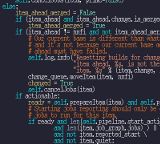
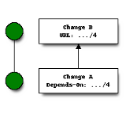
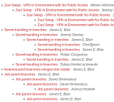

Project Gating
Keep your builds evergreen by automatically merging changes only if they pass tests.
CI/CD with Ansible
Use the same Ansible playbooks to deploy your system and run your tests.
Cross-Project Dependencies
Easily test changes to multiple systems together before landing a single patch.
Tested at scale
Zuul powers some of the largest Open Source development efforts
See how Zuul tests cross-project changes in parallel.
Ready to explore Zuul?
Get Started

Get the Source
Zuul is Free and Open Source Software. Download the source from git.zuul-ci.org or install it from PyPI

Read the Docs
Zuul has extensive documentation.

Join the Mailing List
Zuul has mailing lists for announcements and discussions.